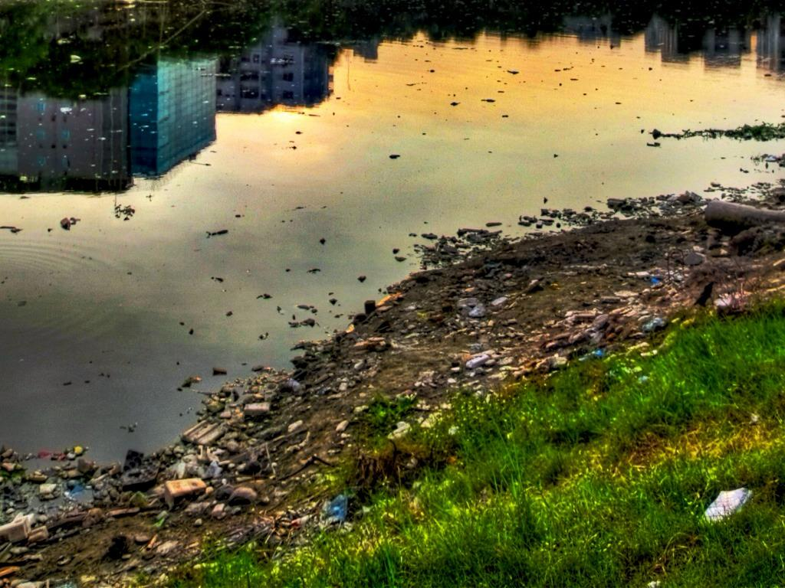

What is Pollution?
Pollution is the introduction of harmful substances or contaminants into the natural environment, causing negative effects on the Earth and its ecosystems. These pollutants can come in many forms—chemical, physical, biological—and can affect the air, water, soil, and even the noise around us. Pollution results from various human activities and has become a critical issue that is harming the planet.

Causes of Pollution
The main causes of pollution are largely attributed to human activities. Some of the key contributors include:
- Industrial Activities: Factories, power plants, and other industrial facilities release toxic chemicals, smoke, and other pollutants into the air and water.
- Transportation: Vehicle emissions, including carbon monoxide, nitrogen oxides, and particulate matter, are major contributors to air pollution.
- Waste Disposal: Improper disposal of industrial, agricultural, and household waste leads to contamination of the land, water, and air.
- Deforestation: The clearing of forests for agriculture or development can lead to soil erosion, air pollution, and biodiversity loss.
- Agricultural Practices: The use of chemical fertilizers and pesticides can contaminate the soil and water, harming wildlife and humans.
- Urbanization: The growth of cities increases waste production, energy consumption, and pollution in the environment.
Impact of Pollution
Pollution has wide-ranging effects on human health, the environment, and the global ecosystem. Some of the major impacts include:
- Health Problems: Air pollution is linked to respiratory diseases, lung cancer, heart disease, and even premature death. Water pollution can lead to waterborne diseases like cholera and dysentery.
- Climate Change: Pollution, particularly carbon dioxide emissions, is a major contributor to global warming and climate change, leading to extreme weather patterns and rising sea levels.
- Ecosystem Disruption: Pollution can destroy habitats, harm wildlife, and disrupt natural cycles. This leads to loss of biodiversity and can cause species to go extinct.
- Soil Degradation: Polluted soils affect plant growth, reduce agricultural productivity, and contribute to the spread of toxins through the food chain.
- Ocean Pollution: Oceans are heavily polluted with plastics and chemicals, which impact marine life and threaten food sources like fish and shellfish.
The Importance of Addressing Pollution
Pollution does not only harm the environment; it directly impacts human lives. It is critical for governments, businesses, and individuals to take action in reducing pollution levels and preserving natural resources. If left unchecked, the consequences of pollution will be devastating, leading to widespread health crises, irreversible environmental damage, and loss of biodiversity.
How You Can Help
Everyone has a role to play in reducing pollution. Here are some simple actions you can take:
- Reduce waste by recycling and reusing materials.
- Opt for public transport, carpooling, or biking to reduce vehicle emissions.
- Support businesses that use eco-friendly products and practices.
- Plant trees and support reforestation efforts to combat deforestation.
- Advocate for policies that promote clean energy and sustainable development.